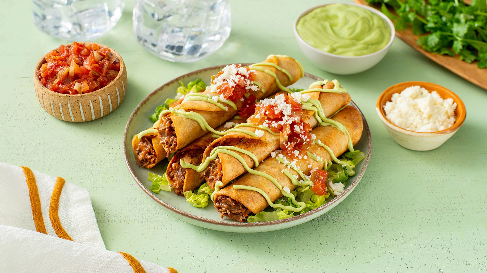

Flautas

.
Flautas, which means "flutes" in Spanish, are a popular Mexican dish consisting of rolled-up tortillas that are typically filled with various ingredients, then fried until crispy. The rolled shape of the tortilla is said to resemble a flute, hence the name.
The preparation of flautas typically involves the following steps:
- Filling: Common fillings for flautas include shredded chicken, beef, or pork, along with cheese, beans, and sometimes vegetables. The filling is often seasoned with various herbs and spices to enhance the flavor.
- Rolling: The tortillas are filled with the chosen ingredients and tightly rolled into cylindrical shapes.
- Frying: The rolled tortillas are then deep-fried until they become golden and crispy. This cooking method gives flautas a crunchy texture.
- Toppings: Flautas are often served with various toppings such as guacamole, salsa, sour cream, shredded lettuce, and sometimes cheese.
Back Home